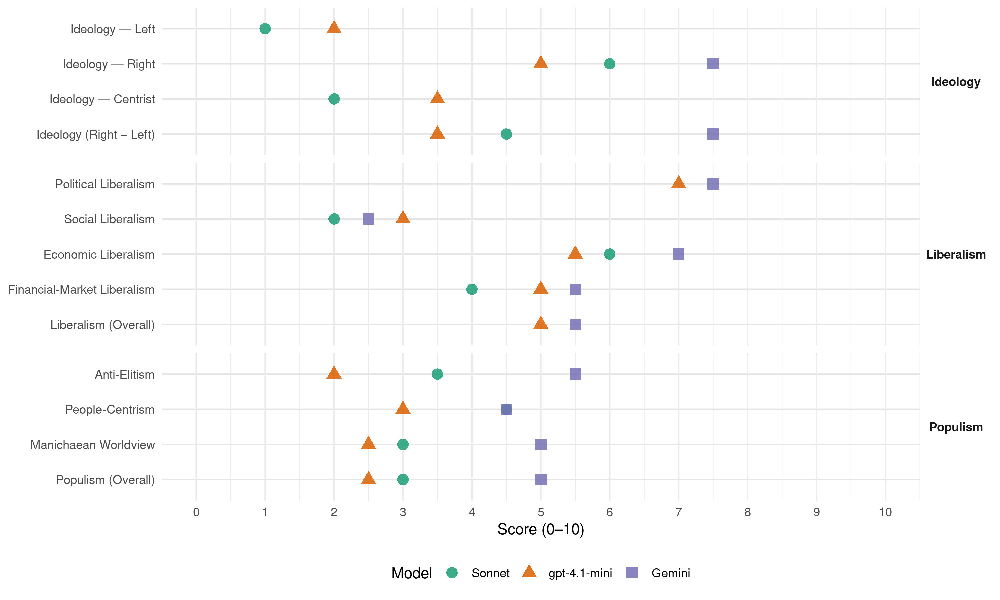

EDU/UDF (Switzerland, 2019)
manifesto_id 43711_201910
Get full text: This site shows derived annotations and short verbatim quotes only. The full manifesto text is © Manifesto Project / WZB — obtain it via manifesto-project.wzb.eu using the manifesto_id above.
Headline scores
| Dimension | Sonnet | gpt-4.1-mini | Gemini |
|---|---|---|---|
| Populism (Overall) | 3.0 | 2.5 | 5.0 |
| Anti-Elitism | 3.5 | 2.0 | 5.5 |
| People-Centrism | 4.5 | 3.0 | 4.5 |
| Manichaean Worldview | 3.0 | 2.5 | 5.0 |
| Ideology (Right − Left) | 4.5 | 3.5 | 7.5 |
| Liberalism (Overall) | – | 5.0 | 5.5 |
| Political Liberalism | – | 7.0 | 7.5 |
| Social Liberalism | 2.0 | 3.0 | 2.5 |
| Economic Liberalism | 6.0 | 5.5 | 7.0 |
| Financial-Market Liberalism | 4.0 | 5.0 | 5.5 |
Evidence per dimension
Economic Liberalism
Gemini · score 8.0 · verified · chunk 1
“Schutz des Privateigentums – Förderung der privaten Initiative”
Die EDU befürwortet: den Schutz des Privateigentums – Förderung der privaten Initiative! günstige Rahmenbedingungen
Gemini · score 6.0 · verified · chunk 2
“Schutz von Eigentum, Kapital und Investitionen”
die Verbesserung von Rechtssicherheit und Schutz von Eigentum, Kapital und Investitionen; dies wirkt vorbeugend gegen Kapitalflucht.
gpt-4.1-mini · score 6.0 · verified · chunk 1
“freie, soziale Marktwirtschaft”
Die EDU bejaht grundsätzlich eine freie, soziale Marktwirtschaft der einzelnen Länder, welche primär den Interessen der Volkswirtschaften und der Bevölkerung der einzelnen Länder dient und bedarfsgerechte Grenzregulierungen zum Schutz der einheimischen, lokalen Volkswirtschaften beinhaltet.
gpt-4.1-mini · score 5.0 · verified · chunk 2
“die Globalisierung begünstigt die Entwicklung von globalen wirtschaftlichen Monopol- Strukturen”
Aus Sicht der EDU ist gesamthaft betrachtet eher das Gegenteil der Fall. Profiteure der Globalisierung sind primär wirtschaftlich konkurrenzstarke und exportorientierte Firmen und Länder, welche dank gros- sen Binnenmärkten und/oder weltweiter Vertriebsorganisationen eine effiziente und kostengünstige Pro- duktions- und Vertriebsinfrastruktur besitzen. Zudem entsteht durch Globalisierung nicht mehr Konkur- renz, sondern die Globalisierung begünstigt die Entwicklung von globalen wirtschaftlichen Monopol- Strukturen, welche bei einzelnen Bereichen oder Produkten Vertrieb und Preise dominieren und/oder diktieren.
Sonnet · score 6.0 · verified · chunk 1
“freie, soziale Marktwirtschaft der einzelnen Länder”
Die EDU bejaht grundsätzlich eine freie, soziale Marktwirtschaft der einzelnen Länder, welche primär den Interessen der Volkswirtschaften und der Bevölkerung der einzelnen Länder dient
Sonnet · score 4.0 · mixed · chunk 2
“marktverfälschenden und Wasserstrom schädlichen KEV”
die ersatzlose Abschaffung der marktverfälschenden und Wasserstrom schädlichen KEV (Kostendeckende Einspeisevergütung)
Financial-Market Liberalism
Gemini · score 7.0 · verified · chunk 1
“Schutz der finanziellen Privatsphäre von ehrlichen Bürgern”
Ja zum Schutz der finanziellen Privatsphäre von ehrlichen Bürgern! Effiziente Bekämpfung und Prävention gegen Steuerhinterziehung!
Gemini · score 4.0 · verified · chunk 2
“Instabilität des globalen Finanzsystems”
Angesichts der exponentiell wachsenden Verschuldung der Welt, der Instabilität des globalen Finanzsystems und zunehmender Konflikte
gpt-4.1-mini · score 5.0 · verified · chunk 1
“Schutz des Privateigentums und der Privatsphäre inkl. der persönlichen Daten”
11 Finanzen, Steuern, Datenschutz Strikte Haushaltsdisziplin und die Durchsetzung der Steuergerechtigkeit bringen Wettbewerbs- und Standortvorteile! Schutz des Privateigentums und der Privatsphäre inkl. der persönlichen Daten des Einzelnen vor unbefugtem staatlichem Zugriff!
Sonnet · score 4.0 · mixed · chunk 1
“Beibehaltung des Bargeldes in der Schweiz”
die Beibehaltung des Bargeldes in der Schweiz als Zahlungsmittel für den Bürger. Gegen die totale staatliche Kontrolle durch die Zwangseinbindung in rein elektronisches Geld.
Sonnet · score 4.0 · verified · chunk 2
“Instabilität des globalen Finanzsystems”
Angesichts der exponentiell wachsenden Verschuldung der Welt, der Instabilität des globalen Finanzsystems und zunehmender Konflikte
Political Liberalism
Gemini · score 8.0 · verified · chunk 1
“Meinungsäusserungs- und die Medienfreiheit sind Grundpfeiler”
Die Meinungsäusserungs- und die Medienfreiheit sind Grundpfeiler einer funktionierenden und lebendigen Demokratie.
Gemini · score 7.0 · verified · chunk 2
“Glaubens- und Religionsfreiheit sowie Meinungsäusserungs- und Pressefreiheit”
staatliche Institutionen, welche die Menschenrechte und besonders das Recht auf Glaubens- und Religionsfreiheit sowie Meinungsäusserungs- und Pressefreiheit missachten.
gpt-4.1-mini · score 6.0 · verified · chunk 1
“Meinungs- und Medienfreiheit sind Grundpfeiler einer funktionierenden und lebendigen Demokratie”
Meinungsäusserungs- und Medienfreiheit Die Meinungsäusserungs- und die Medienfreiheit sind Grundpfeiler einer funktionierenden und lebendigen Demokratie. Sie sind in der Verfassung verankert (BV-Art. 16 und 17). Leider werden sie durch Behörden, Gerichte und Mainstream-Medien zunehmend eingeschränkt, wenn sie der dominierenden Mehrheitsmeinung entgegenstehen.
gpt-4.1-mini · score 8.0 · verified · chunk 2
“die Glaubens- und Meinungsäusserungsfreiheit von Lehrkräften, Schülern und Eltern”
Die EDU befürwortet: ein Erziehungs- und Bildungssystem auf einer christlich-jüdischen Wertebasis, mit Freiheit des Denkens und Chancengleichheit ohne Gleichmacherei. die Glaubens- und Meinungsäusserungsfreiheit von Lehrkräften, Schülern und Eltern. die Vermittlung der christlichen Grundwerte und Verhaltensnormen sowie des biblischen Schöpfungsmodells als Gegenüberstellung zur Evolutionshypothese an den Volks-, Berufs-, Mittel- und Hochschulen.
Sonnet · score 6.0 · mixed · chunk 1
“freiheitlichen, demokratischen, rechtsstaatlichen”
Ja zu unserer freiheitlichen, demokratischen, rechtsstaatlichen und unabhängigen Schweiz auf der Grundlage christlicher Werte!
Sonnet · score 6.0 · mixed · chunk 2
“direkt-)demokratischen Strukturen des Schweizer Politsystems”
die weitere Stärkung der wertvollen (direkt-)demokratischen Strukturen des Schweizer Politsystems. die Einführung des Proporzwahlverfahrens
Liberalism (Overall)
Gemini · score 6.0 · verified · chunk 1
“Schutz des Privateigentums – Förderung der privaten Initiative”
Die EDU befürwortet: den Schutz des Privateigentums – Förderung der privaten Initiative! günstige Rahmenbedingungen
Gemini · score 5.0 · verified · chunk 2
“Schutz von Eigentum, Kapital und Investitionen”
die Verbesserung von Rechtssicherheit und Schutz von Eigentum, Kapital und Investitionen; dies wirkt vorbeugend gegen Kapitalflucht.
gpt-4.1-mini · score 5.0 · verified · chunk 1
“Meinungs- und Medienfreiheit sind Grundpfeiler einer funktionierenden und lebendigen Demokratie”
Meinungsäusserungs- und Medienfreiheit Die Meinungsäusserungs- und die Medienfreiheit sind Grundpfeiler einer funktionierenden und lebendigen Demokratie. Sie sind in der Verfassung verankert (BV-Art. 16 und 17). Leider werden sie durch Behörden, Gerichte und Mainstream-Medien zunehmend eingeschränkt, wenn sie der dominierenden Mehrheitsmeinung entgegenstehen.
gpt-4.1-mini · score 5.0 · mixed · chunk 2
“die Globalisierung begünstigt die Entwicklung von globalen wirtschaftlichen Monopol- Strukturen”
Aus Sicht der EDU ist gesamthaft betrachtet eher das Gegenteil der Fall. Profiteure der Globalisierung sind primär wirtschaftlich konkurrenzstarke und exportorientierte Firmen und Länder, welche dank gros- sen Binnenmärkten und/oder weltweiter Vertriebsorganisationen eine effiziente und kostengünstige Pro- duktions- und Vertriebsinfrastruktur besitzen. Zudem entsteht durch Globalisierung nicht mehr Konkur- renz, sondern die Globalisierung begünstigt die Entwicklung von globalen wirtschaftlichen Monopol- Strukturen, welche bei einzelnen Bereichen oder Produkten Vertrieb und Preise dominieren und/oder diktieren.
Sonnet · score 5.0 · mixed · chunk 1
“freiheitlichen, demokratischen, rechtsstaatlichen”
Ja zu unserer freiheitlichen, demokratischen, rechtsstaatlichen und unabhängigen Schweiz auf der Grundlage christlicher Werte!
Sonnet · score 4.0 · mixed · chunk 2
“marktverfälschenden und Wasserstrom schädlichen KEV”
die ersatzlose Abschaffung der marktverfälschenden und Wasserstrom schädlichen KEV (Kostendeckende Einspeisevergütung)
Anti-Elitism
Gemini · score 6.0 · verified · chunk 1
“durch Behörden, Gerichte und Mainstream-Medien zunehmend eingeschränkt”
Leider werden sie durch Behörden, Gerichte und Mainstream-Medien zunehmend eingeschränkt, wenn sie der dominierenden Mehrheitsmeinung entgegenstehen.
Gemini · score 5.0 · verified · chunk 2
“Marionette der fünf Grossmächte”
Damit ist die Schweiz heute eine Marionette der fünf Grossmächte mit Vetorecht im UNO-Sicherheitsrat.
gpt-4.1-mini · score 2.0 · verified · chunk 1
“Behörden, Gerichten und Medien zunehmend eingeschränkt”
Leider werden Glaubens- und Gewissensfreiheit von Behörden, Gerichten und Medien zunehmend eingeschränkt, wenn sie eine konservative oder biblisch-christliche Ausrichtung haben.
gpt-4.1-mini · score 2.0 · verified · chunk 2
“von den links-liberalen Mehrhei- ten im Verbund mit den Medien als Rassisten, Ausländerhasser und Fremdenfeinde abgestempelt”
Sie wurden von den links-liberalen Mehrhei- ten im Verbund mit den Medien als Rassisten, Ausländerhasser und Fremdenfeinde abgestempelt. Logischerweise führt eine solche Einwanderungspolitik zu Integrationsproblemen.
Sonnet · score 3.0 · verified · chunk 1
“Mainstream-Medien zunehmend eingeschränkt”
Leider werden sie durch Behörden, Gerichte und Mainstream-Medien zunehmend eingeschränkt, wenn sie der dominierenden Mehrheitsmeinung entgegenstehen.
Sonnet · score 4.0 · verified · chunk 2
“links-liberalen Mehrheiten im Verbund mit den Medien”
Sie wurden von den links-liberalen Mehrheiten im Verbund mit den Medien als Rassisten, Ausländerhasser und Fremdenfeinde abgestempelt.
Ideology — Centrist
gpt-4.1-mini · score 3.0 · verified · chunk 1
“freiwilligen Mobilitätsverzicht”
Verkehr Verkehrsprobleme lösen mit bedarfsgerechtem öffentlichem Verkehr, effizientem Privatverkehr und freiwilligem Mobilitätsverzicht!
gpt-4.1-mini · score 4.0 · verified · chunk 2
“Integration heisst aus Sicht der EDU nicht, seine Wurzeln oder seine Identität zu verleugnen oder abzulegen”
Integration heisst aus Sicht der EDU nicht, seine Wurzeln oder seine Identität zu verleugnen oder abzulegen, sondern lediglich bewusst und willentlich die Lebensweise und Spielregeln des Gastlandes zu akzeptieren und zu respektieren, sowie sich aktiv eigenverantwortlich um die sprachliche Verständigung in der Sprache des Gastlandes zu bemühen.
Sonnet · score 2.0 · verified · chunk 1
“primär der Bibel als Gottes Wort”
Die Mitglieder und politischen Mandatsträger der EDU sowie ihre Kandidierenden fühlen sich primär der Bibel als Gottes Wort und ihrem eigenen Gewissen verpflichtet
Sonnet · score 2.0 · verified · chunk 2
“weitere Stärkung der wertvollen (direkt-)demokratischen Strukturen”
die weitere Stärkung der wertvollen (direkt-)demokratischen Strukturen des Schweizer Politsystems.
Ideology — Left
gpt-4.1-mini · score 2.0 · verified · chunk 1
“Soziale Gerechtigkeit und des sozialen Friedens sind Grundlage”
6 Soziale Gerechtigkeit Die Erhaltung und Förderung der sozialen Gerechtigkeit und des sozialen Friedens sind Grundlage für das friedliche Zusammenleben und Wohlergehen für Volk und Land.
gpt-4.1-mini · score 2.0 · verified · chunk 2
“von den links-liberalen Mehrhei- ten im Verbund mit den Medien als Rassisten, Ausländerhasser und Fremdenfeinde abgestempelt”
Sie wurden von den links-liberalen Mehrhei- ten im Verbund mit den Medien als Rassisten, Ausländerhasser und Fremdenfeinde abgestempelt. Logischerweise führt eine solche Einwanderungspolitik zu Integrationsproblemen.
Sonnet · score 1.0 · verified · chunk 1
“faire Beteiligung aller Bevölkerungsgruppen”
faire Beteiligung aller Bevölkerungsgruppen am wirtschaftlichen und sozialen Wohlstand, konstruktive Leistungsbereitschaft
Sonnet · score 1.0 · verified · chunk 2
“ohne humanistische, sozialistische und feministische Ideologien”
eine Volksschule zur Lebensvorbereitung unserer Jugend ohne humanistische, sozialistische und feministische Ideologien oder Gender-Doktrin.
Ideology (Right − Left)
Gemini · score 7.0 · verified · chunk 1
“Nein zum absoluten Machtanspruch des politischen Islam”
Nein zum absoluten Machtanspruch des politischen Islam! Nein auch zu einem Einbezug islamischer Rechtsgebräuche
Gemini · score 8.0 · verified · chunk 2
“Folgen der ungebremsten Einwanderung”
Seit Jahrzehnten haben diverse politische Minderheitsgruppierungen auf die Folgen der ungebremsten Einwanderung hingewiesen.
gpt-4.1-mini · score 4.0 · verified · chunk 1
“Behörden, Gerichten und Medien zunehmend eingeschränkt”
Leider werden Glaubens- und Gewissensfreiheit von Behörden, Gerichten und Medien zunehmend eingeschränkt, wenn sie eine konservative oder biblisch-christliche Ausrichtung haben.
gpt-4.1-mini · score 3.0 · verified · chunk 2
“Eine solche Einwanderungspolitik ist aus Sicht der EDU nicht im langfristigen Interesse unseres Landes und absolut unverantwortlich”
Eine solche Einwanderungspolitik ist aus Sicht der EDU nicht im langfristigen Interesse unseres Landes und absolut unverantwortlich. Seit Jahrzehnten haben diverse politische Minderheitsgruppierungen auf die Folgen der ungebremsten Einwanderung hingewiesen.
Sonnet · score 4.0 · verified · chunk 1
“autonome Einwanderungspolitik der Schweiz”
Darum eine autonome Einwanderungspolitik der Schweiz gemäss den Interessen unseres Landes, nach Bedarf mit Korrektur oder Kündigung des Personenfreizügigkeitsabkommens!
Sonnet · score 5.0 · verified · chunk 2
“Begrenzung des Bevölkerungswachstums, insbesondere der Einwanderung”
primär eine Verbesserung der Energieeffizienz bei Produktion, Transport, Verteilung und Nutzung von Energie, sowie eine Begrenzung des Bevölkerungswachstums, insbesondere der Einwanderung
Ideology — Right
Gemini · score 7.0 · verified · chunk 1
“Nein zum absoluten Machtanspruch des politischen Islam”
Nein zum absoluten Machtanspruch des politischen Islam! Nein auch zu einem Einbezug islamischer Rechtsgebräuche
Gemini · score 8.0 · verified · chunk 2
“Folgen der ungebremsten Einwanderung”
Seit Jahrzehnten haben diverse politische Minderheitsgruppierungen auf die Folgen der ungebremsten Einwanderung hingewiesen.
gpt-4.1-mini · score 7.0 · verified · chunk 1
“Nein zum absoluten Machtanspruch des politischen Islam!”
Die EDU fordert die Respektierung und Durchsetzung der Glaubensfreiheit gemäss BV-Art. 15 ), EMRK-Art. 9 ) und UNO-Pakt II Art. 18 ) und der Meinungsäusserungsfreiheit gemäss BV-Art. 16 ), EMRK-Art. 10 ) und UNO-Pakt II Art. 19 ) für alle, inklusive Muslime, auch gegenüber dem Islam! Nein zum absoluten Machtanspruch des politischen Islam!
gpt-4.1-mini · score 3.0 · verified · chunk 2
“Einwanderungspolitik ist aus Sicht der EDU nicht im langfristigen Interesse unseres Landes und absolut unverantwortlich”
Weil die Schweiz mit dem Personenfreizügigkeitsabkommen und dem Assoziierungsver- trag zu Schengen-Dublin die Einwanderungspolitik aus EU-Ländern vollständig aus der Hand und an die EU in Brüssel abgegeben hat, können wir die Einwanderung aus den EU-Staaten nicht kontrollieren, da diese EU-Bürger gemäss Personenfreizügigkeit einen Rechtsanspruch auf Einwanderung, Aufent- halt und Niederlassung in unserem Land haben. Eine solche Einwanderungspolitik ist aus Sicht der EDU nicht im langfristigen Interesse unseres Landes und absolut unverantwortlich.
Sonnet · score 6.0 · verified · chunk 1
“autonome Einwanderungspolitik der Schweiz”
Darum eine autonome Einwanderungspolitik der Schweiz gemäss den Interessen unseres Landes, nach Bedarf mit Korrektur oder Kündigung des Personenfreizügigkeitsabkommens!
Sonnet · score 6.0 · verified · chunk 2
“Begrenzung des Bevölkerungswachstums, insbesondere der Einwanderung”
primär eine Verbesserung der Energieeffizienz bei Produktion, Transport, Verteilung und Nutzung von Energie, sowie eine Begrenzung des Bevölkerungswachstums, insbesondere der Einwanderung
Manichaean Worldview
Gemini · score 5.0 · verified · chunk 2
“Verketzerung und Verhöhnung der Schweiz”
Die jahrelange Verketzerung und Verhöhnung der Schweiz durch links-liberale Medien und Intellektuelle
gpt-4.1-mini · score 3.0 · verified · chunk 1
“totalitären Ideologie eingestuft und entsprechende rechtsstaatliche Massnahmen ergriffen”
…müssen diese Lehrinhalte aus Sicht der EDU als für den inneren Frieden und die innere Sicherheit gefährliche totalitäre Ideologie eingestuft und entsprechende rechtsstaatliche Massnahmen ergriffen werden.
gpt-4.1-mini · score 2.0 · verified · chunk 2
“Die EDU befürwortet: die grundsätzliche Anwendung gleicher ethischer, politischer, sozialer und rechtlicher Anforderungskriterien für Import und Export, für Liefer- und Empfängerländer von Waffen”
Die EDU befürwortet: die grundsätzliche Anwendung gleicher ethischer, politischer, sozialer und rechtlicher Anforderungskriterien für Import und Export, für Liefer- und Empfängerländer von Waffen, Polizei- und Militärausrüstungen. den Erhalt von eigenem Rüstungs-Know-how und einer eigenen Rüstungsindustrie mit geregelten Exportmöglichkeiten zur Verminderung der Auslandabhängigkeit.
Sonnet · score 3.0 · verified · chunk 1
“Gender-Ideologie eine direkte «Kriegserklärung»”
Aus Sicht der EDU ist die Gender-Ideologie *) eine direkte «Kriegserklärung» an die biblische Ordnung von Ehe und Familie
Sonnet · score 3.0 · verified · chunk 2
“links-liberale Medien und Intellektuelle”
Die jahrelange Verketzerung und Verhöhnung der Schweiz durch links-liberale Medien und Intellektuelle hat dazu geführt
People-Centrism
Gemini · score 5.0 · verified · chunk 1
“Das Wohl des Volkes sei das oberste Gebot”
«Salus publica suprema lex esto»: «Das Wohl des Volkes sei das oberste Gebot» (Inschrift am Bundeshaus in Bern)
Gemini · score 4.0 · verified · chunk 2
“Stärkung der wertvollen (direkt-)demokratischen Strukturen”
Die EDU befürwortet: die weitere Stärkung der wertvollen (direkt-)demokratischen Strukturen des Schweizer Politsystems.
gpt-4.1-mini · score 3.0 · verified · chunk 1
“«Salus publica suprema lex esto»: «Das Wohl des Volkes sei das oberste Gebot»”
1 Die EDU Schweiz und ihr Profil «Salus publica suprema lex esto»: «Das Wohl des Volkes sei das oberste Gebot» (Inschrift am Bundeshaus in Bern) Die Eidgenössisch-Demokratische Union (EDU), französisch Union Démocratique Fédérale (UDF) und italienisch Unione Democratica Federale (UDF), ist eine politische Partei.
gpt-4.1-mini · score 3.0 · verified · chunk 2
“die Bevölkerung des Gastlandes muss die Einwanderer auf der Ebene der persönlichen Alltagsbeziehungen zu solchen Integrationsschritten ermutigen und einladen”
Das Gastland soll jedoch im Eigeninteresse die Rahmenbedingungen so regeln, dass die Pflege der eigenen Identität und Kultur bei gleichzeitiger Akzeptanz und Respektierung der Gepflogenheiten und Regeln des Gastlandes sowie geeignete Möglichkeiten zum Erlernen der Gastlandsprache für die Immigranten ohne Schwie- rigkeiten möglich sind. So ist es zum Beispiel selbstverständlich, dass Schweizer Auswanderer auch in Kanada oder Australien Englisch lernen, die dortigen Gesetze einhalten und gleichzeitig Fondue, Rac- lette oder Rösti essen. Aus Sicht der EDU kann Integration nicht vom Staat oder von den Behörden von oben herab befohlen oder angeordnet werden. Sie muss freiwillig von Seiten der Einwanderer erfolgen, und das Gastland muss dazu im Interesse einer erfolgreichen Integration Rahmenbedingungen schaffen, welche diese Integrations-Eigeninitiative der Einwanderer begünstigt und fördert. Auch die Bevölkerung des Gastlan- des muss die Einwanderer auf der Ebene der persönlichen Alltagsbeziehungen zu solchen Integrati- onsschritten ermutigen und einladen.
Sonnet · score 5.0 · verified · chunk 1
“Das Wohl des Volkes sei das oberste Gebot”
«Salus publica suprema lex esto»: «Das Wohl des Volkes sei das oberste Gebot» (Inschrift am Bundeshaus in Bern)
Sonnet · score 4.0 · verified · chunk 2
“Die Jugend ist die Zukunft unseres Landes”
Die Jugend ist die Zukunft unseres Landes! Die EDU unterstützt die Förderung von Jugendlichen in Ausbildung und Arbeitsmarkt
Populism (Overall)
Gemini · score 5.0 · verified · chunk 1
“durch Behörden, Gerichte und Mainstream-Medien zunehmend eingeschränkt”
Leider werden sie durch Behörden, Gerichte und Mainstream-Medien zunehmend eingeschränkt, wenn sie der dominierenden Mehrheitsmeinung entgegenstehen.
Gemini · score 5.0 · verified · chunk 2
“Verketzerung und Verhöhnung der Schweiz”
Die jahrelange Verketzerung und Verhöhnung der Schweiz durch links-liberale Medien und Intellektuelle
gpt-4.1-mini · score 3.0 · verified · chunk 1
“Behörden, Gerichten und Medien zunehmend eingeschränkt”
Leider werden Glaubens- und Gewissensfreiheit von Behörden, Gerichten und Medien zunehmend eingeschränkt, wenn sie eine konservative oder biblisch-christliche Ausrichtung haben.
gpt-4.1-mini · score 2.0 · verified · chunk 2
“von den links-liberalen Mehrhei- ten im Verbund mit den Medien als Rassisten, Ausländerhasser und Fremdenfeinde abgestempelt”
Sie wurden von den links-liberalen Mehrhei- ten im Verbund mit den Medien als Rassisten, Ausländerhasser und Fremdenfeinde abgestempelt. Logischerweise führt eine solche Einwanderungspolitik zu Integrationsproblemen.
Sonnet · score 3.0 · verified · chunk 1
“Das Wohl des Volkes sei das oberste Gebot”
«Salus publica suprema lex esto»: «Das Wohl des Volkes sei das oberste Gebot» (Inschrift am Bundeshaus in Bern)
Sonnet · score 3.0 · verified · chunk 2
“links-liberalen Mehrheiten im Verbund mit den Medien”
Sie wurden von den links-liberalen Mehrheiten im Verbund mit den Medien als Rassisten, Ausländerhasser und Fremdenfeinde abgestempelt.
Social Liberalism